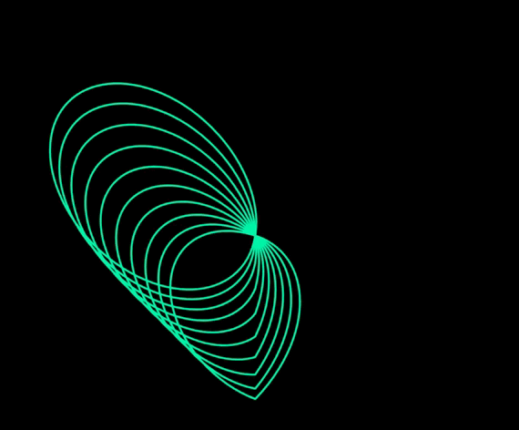
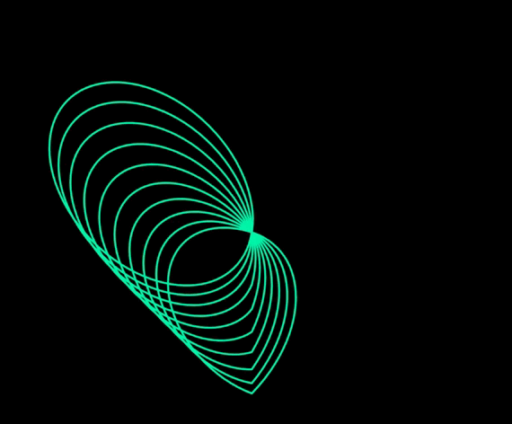

Siendo más honesto, realmente eres de gran relevancia en mi vida, y ahora no pienso dejar que algo termine de romper ese lazo que hemos formado.
Casi siempre pienso para arriesgarme en muchas cosas, sean mínimas o no, pero contigo no tengo porqué hacerlo, ya que no eres en absoluto una mala persona, y por tanto jamás una mala decisión.
Es por eso que a pesar de aún faltarnos pasos más allá para ser más de lo que somos ahora, deseo con toda mi alma hacerlo, pues, alguna vez lo admitiste: "Todavía no miras mi lado más empalagoso"
Ahora me carcome demasiado el esperar cuando podré verlo, cuando pasará, cuando será, y cuando también lo seré...
Me alegra mucho haber conocido a alguien tan especial, el que me hayas hablado siempre será mi serendipia, y ese sentimiento siempre será "Indescribable" (tenía que hacer mi Hillsong referencia jsjsjs)
Gracias por permitirme ser parte de tu vida, seguiré guardando más momentos para tenerlos en mi memoria y alma...
Respondiendo a tu última diapositiva: No te preocupes, prometo que será pronto...
Unas últimas reflexiones:
 

Para finalizar: